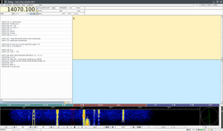

Fldigi
| Fldigi | |
|---|---|
|  Fldigi main window snapshot | |
| Developers | Dave Freese (W1HKJ), et al.[1] |
| Initial release | 2007 |
| Stable release | 4.2.05
/ 23 April 2024[2] |
| Repository | sourceforge |
| Written in | FLTK, C, C++ |
| Operating system | Windows, macOS, Linux, Android, FreeBSD[3] |
| Platform | IA-32, x64, IA-64, armel, armhf, mips, mipsel, PowerPC, s390, s390x, SPARC, Raspberry Pi |
| Size | About 6.5 MB |
| Available in | 10 languages |
List of languages English, Catalan, Dutch, French, German, Greek, Italian, Polish, Spanish, Russian | |
| Type | Amateur radio and DSP |
| License | GPL version 3.0 |
| Website | www |
{kind=link}
Fldigi (short for Fast light digital)[4] is a free and open-source program which allows an ordinary computer's sound card to be used as a simple two-way data modem. The software is mostly used by amateur radio operators who connect the microphone and headphone connections of an amateur radio SSB or FM transceiver to the computer's headphone and microphone connections, respectively.[5][6]
This interconnection creates a "sound card defined radio" whose available bandwidth is limited by the sound card's sample rate and the external radio's bandwidth.
Such communications are normally done on the shortwave amateur radio bands in modes such as PSK31, MFSK, RTTY, Olivia, and CW (Morse code). Increasingly, the software is also being used for data on VHF and UHF frequencies using faster modes such as 8-PSK.
Using this software, it is possible for amateur radio operators to communicate worldwide while using only a few watts of RF power.
Fldigi software is also used for amateur radio emergency communications when other communication systems fail due to natural disaster or power outage. Transfer of files, emails, and FEMA ICS forms are possible using inexpensive radio hardware.[7][8][9][10]
Supported digital modes
| Mode name | Speeds supported | Custom modes |
|---|---|---|
| Morse code CW | 5–50 words-per-minute | Yes |
| PSK | 31, 63, 63F, 125, 250, 500, 1000 | No |
| FSQ | 2, 3, 4.5, 6 | No |
| IFKP[11] | 0.5, 1.0, 2.0 | No |
| Contestia | 4/125, 4/250, 8/250, 4/500, 8/500, 16/500, 8/1000, 16/1000, 32/1000, 64/1000 | Yes |
| DominoEX | Micro, 4, 5, 8, 11, 16, 22, 44, 88 | No |
| Hellschreiber | Feld Hell, Slow Hell, Feld Hell X5, Feld Hell X9, FSK Hell, FSK Hell-105, Hell 80 | No |
| MFSK | 4, 8, 11, 16, 22, 31, 32, 64, 64L, 128, 128L | No |
| MT63 | 500S, 1000S, 2000S, 500L, 1000L, 2000L | No |
| Navtex | Navtex | No |
| Olivia | 4/250, 8/250, 4/500, 8/500, 16/500, 8/1000, 16/1000, 32/1000, 64/2000 | Yes |
| QPSK | 31, 63, 125, 250, 500 | No |
| 8PSK | 125, 250, 500, 1000, 125FL, 250FL, 125F, 250F, 500F, 1000F, 1200F | No |
| PSKR | 125R, 250R, 500R, 1000R | No |
| RTTY | 45.45/170, 50/170, 75/170, 75/850 | Yes |
| SYNOP | SYNOP | No |
| THOR | Micro, 4, 5, 8, 11, 16, 22, 25x4, 50x1, 50x2 100 | No |
| SITORB | SitorB | No |
| Throb / ThrobX | 1, 2, 4 / X1, X2, X4 | No |
| WEFAX | IOC-576,[12] IOC288 | No |
| OFDM | 500F, 750F, 3500 | No |
Portability
Operating systems
Fldigi is based on the lightweight portable graphics library FLTK and the C/C++ language. Because of this, the software can run on many different operating systems such as:
- Microsoft Windows (2000 or newer)
- macOS
- Linux,[13]
- FreeBSD,[14]
- OpenBSD,[15]
- NetBSD,[16]
- Solaris.[17]
Additionally, Fldigi is designed to compile and run on any POSIX compliant operating system that uses an X11 compatible window system / graphical user interface.[17]
Architectures
The Fldigi software is written in highly portable C/C++ and can be used on many CPU architectures, including:
Sound systems
Multiple sound systems are supported by Fldigi, allowing the program to abstract the sound card hardware across differing hardware and operating systems.
- Open Sound System (OSS)
- PortAudio
- PulseAudio
- Read / write to WAV files (file I/O)
Features
- NBEMS: The narrowband emergency messaging system[19][20][9]
- Support for transmitting and receiving in all languages by using UTF-8 character encoding (some modes)
- Connection to external programs via TCP/IP port 7322[21]
- Ability to be used as a KISS modem via TCP/IP port 7342
- Dual-tone multi-frequency (DTMF) encoding and decoding
- Automatic switching of mode and frequency by use of Reed Solomon Identifier signal identification
- Inbuilt macro language and processor for programmable automated control
- Sound card oscillator frequency/skew correction
- Measure sound card oscillator's skew to atomic clock: WWV or WWVH
- Measure RF receiver frequency skew to atomic clock: WWV or WWVH
- Transmit a WWV-like time signal as a calibration reference
- Control of external transmit / receive radio hardware by using GPIO pins. (For embedded hardware)
- Simultaneous decoding of multiple Morse code (CW) signals
- Decoding of Morse code (CW) by self-organizing map artificial neural network (trained artificial intelligence)
The Fldigi Suite
The "Fldigi Suite" consists of the Fldigi modem and all extension programs released by the same development group. Most of these extensions add more capabilities to Fldigi such as verified file transfer and message passing. Interconnection between these programs and the Fldigi modem is made over TCP/IP port 7322.[22]
Some of the Suite are however standalone programs used for utility or testing purposes only, with no connection to the Fldigi main modem.
Flamp
Flamp implements the Amateur Multicast Protocol by Dave Freese, W1HKJ[23] and is a tool for connectionless transferring of files to multiple users simultaneously without requiring any existing infrastructure. The program breaks a given file into multiple smaller pieces, checksums each piece, then transmits each piece one or more times. When all parts are correctly received the sent file is re-assembled and can be saved by receiving stations.[24] This program is useful for multicasting files over lossy connections such as those found on High frequency (HF) or during emergency communications.
Flarq
Flarq implements the ARQ specification developed by Paul Schmidt, K9PS[25] to transfer emails, text files, images, and binary files over radio. This protocol is unicast and connection-based. The software seamlessly integrates with existing email clients such as Microsoft Outlook, Mozilla Thunderbird, and Sylpheed.[26]
Flmsg
Flmsg allows users to send, receive, edit, and create pre-formatted forms. Such a system speeds the flow of information during emergency communications. The software has a number of forms built-in including FEMA ICS forms, MARS reports & messages, Hospital ICS forms, Red Cross messages, IARU and NTS messages.[27]
Flwrap
Flwrap is a tool for the sending of files using a simplified drag and drop interface. Data compression is available also, which reduces data transfer times.[28]
FLNet
FLNet assists net control operators in keeping track of multiple stations during digital amateur radio nets.[29]
FLLog
FLLog is a logging software which keeps track of conversations between amateur radio operators in a database format known as ADIF.[30]
FLWkey
FLWkey is a simple interface to control an external piece of hardware called a Winkeyer.[31] This is a Morse code keyer which is adjustable via computer commands over USB.[32]
Flcluster
This is a telnet client to remote DX cluster servers, which is a real-time reporting of stations heard transmitting, and their frequencies. It does not connect to Fldigi.[33]
Flaa
Flaa is a control program for use with the RigExpert AA-xxxx series of antenna analyzers, and does not connect to Fldigi.[34]
Flrig
FLRig is a component of the FLDigi suite of applications that enables computer aided control of various radios using a serial or USB connection.[35]
Using FLRig in combination with FLDigi, events such as frequency, power level, receiver gain and audio gain may be adjusted from the computer automatically or by user intervention.
Test tools
The Fldigi development group also releases a number of open-source programs which assist in the testing, development, and comparison of different modes within Fldigi, such as LinSim, CompText, and CompTTY.
RSID
To identify the mode being transmitted a signal called an RSID, or Reed-Solomon Identifier, can be transmitted before the data. Using this identifier the receiving software can automatically switch to the proper mode for decoding. The assigning of these identifiers to new modes is coordinated to ensure inter-operation between programs.[36] Currently 7 sound card-digital-modem programs support this standard:
- PocketDigi
- FDMDV
- DM780
- Multipsk
- Fldigi
- AndFlmsg
- TIVAR
RSID operates by sending a short burst of a specific modulation before the data signal, which can be used to automatically identify over 272 digital modes. This burst consists of a 10.766 baud 16-tone MFSK modulation where 15 tones/symbols are sent. The burst occupies 172 Hz of bandwidth and lasts for 1.4 seconds.[36]
Software architecture
For simple keyboard-to-keyboard communication Fldigi can be operated using just the main window. For more complex uses or file transfer external programs can be attached to the internal TCP/UDP ports 7322 (ARQ), 7342 (KISS), and 7362 (XML-RPC).
The image below helps to illustrate the interconnections and signal-flow within the Fldigi architecture.
{kind=link}
Community-provided extensions
Fldigi allows external programs to attach and send / receive data by connecting to port 7322/ARQ or 7342/KISS. When used this way, Fldigi and the computer's sound card are acting as a "softmodem" allowing text or data sent on one computer to be transferred using the wireless radio link in-between. Programs which have a history of use with Fldigi as the underlying modem include:
- D-Rats - easy to use chatrooms, email, and file transfer over-radio.
- PSKmail - send and receive on-internet e-mail over a remote radio connection.[37]
- Fldigiattach - attach Fldigi as modem for Linux AX.25 and TCP/IP connections.
- UIChat - Java-based amateur radio chat program.
- LinkUP - Program for unattended operation and person to person chat.
- Linux - Fldigi can be used in Linux as a KISS (TNC) modem for AX.25 and TCP/IP connections.
Awards and recognitions
- At the 2014 Dayton Hamvention the project lead, Dave Freese (W1HKJ), was recognized with the Technical Excellence Award "for his development and distribution of the Fast Light Digital Modem Application (fldigi) family of programs for use in amateur and emergency communications."[38]
- Fldigi was selected as SourceForge's June 2017 Staff 'Project of the Month'[39]
- Fldigi was one of SourceForge's 'Projects of the Week' for Oct 17, 2016[40]
- Fldigi was selected as SourceForge's December 2017 Community Choice 'Project of the Month'[41]
Notable users
Disaster relief services
The software is also utilized by some organizations for both routine and disaster/emergency relief services.
- Multiple state and county emergency operations centers[42][43]
- W1AW (ARRL)[44]
- Amateur Radio Emergency Service (ARES)[45][42]
- Radio Amateur Civil Emergency Service (RACES)[46]
- Civil Air Patrol (CAP)[47]
- SATERN, the Salvation Army Team Emergency Radio Network[48]
- SKYWARN a program of the United States' National Weather Service (NWS) whose mission is to collect reports of localized severe weather.[49]
Shortwave broadcasters
Following the successful tests by the Voice of America's VOA Radiogram program, international and government shortwave broadcasters began testing and experimenting with digital data over shortwave broadcast channels using the Fldigi software.[50] These tests led to regular weekly digital broadcasts by the broadcasters listed below.
- VOA Radiogram, service terminated in 2017 and continuing as Shortwave Radiogram.
- In June 2017, following the demise of VOA Radiogram, Shortwave Radiogram began broadcasting digital data-streams using Fldigi via WRMI in Miami and Spaceline Bulgaria broadcasting airtime on shortwave, satellite and internet in Bulgaria.[51]
- Radio Havana Cuba
- Radio Moscow
- Radio Australia[52]
- Radio Miami International
- Italian Broadcasting Corporation[53]
- WBCQ (SW)[54]
- Mighty KBC[55]
MARS
The Fldigi suite of programs has become popular within the U.S. Army and U.S. Air Force Military Auxiliary Radio System.[56][57]
Department of Homeland Security
Fldigi is being used in-testing as part of the United States Department of Homeland Security Shares program, which utilizes "existing HF radio resources of government, critical infrastructure, and disaster response organizations to coordinate and transmit emergency messages"[58][59]
PSK Mail
Fldigi is used as the underlying modem for the PSKmail project.[37] PSK Mail allows users to retrieve and send normal emails over radio.
AirChat
In 2014, the group Anonymous released a communications tool named AirChat, which used Fldigi as the underlying modem. This provided a low speed yet reliable data connection using only moderate radio hardware. The AirChat software allows for anonymous transmissions of both encrypted and unencrypted messages over unencrypted channels.[60][61][62]
Decodeable broadcasts
The broadcasts listed below are transmitted on a regular schedule and can be decoded using Fldigi.
- SITOR text forecasts and storm warnings[63]
- WEFAX visual weather fax[64]
- SYNOP surface synoptic observations[65]
- NAVTEX warnings, forecasts, and safety information broadcasts[63]
- VOA Radiogram Broadcasts
- W1AW Broadcasts
See also
- Amateur radio
- Shortwave radio
- WSPR (amateur radio software)
- WSJT (amateur radio software)
- CW Skimmer
- Internet Radio Linking Project
- PSK31
- RTTY
- American Radio Relay League
References
- ^ "Authors file". Retrieved 14 September 2018 – via SourceForge.
- ^ "fldigi / fldigi Commit Log". sourceforge.net. Retrieved 6 April 2021.
- ^ "Beginners' Guide to Fldigi". w1hkj.com.
- ^ "Documentation/FAQ – fldigi". fedorahosted.org.
- ^ "Rolling Your Own with Digital Amateur Radio - Linux Journal". www.linuxjournal.com.
- ^ "An Amateur Radio Survival Guide for Linux Users - Linux Journal". www.linuxjournal.com.
- ^ Allocca, John. Amateur Radio Emergency Communications Reference. Lulu.com. ISBN 9781105450372 – via Google Books.
- ^ Introduction arrl.org
- ^ a b NBEMS — a Digital Emcomm Tool w1hkj.com
- ^ "FOSS for amateur radio [LWN.net]". lwn.net. Retrieved 15 December 2021.
- ^ "MT63 Modes". www.w1hkj.com.
- ^ "How Do I Decode a Weather Facsimile (WEFAX) Off of my Shortwave?". hfradioreview.com. 23 October 2014. Archived from the original on 15 October 2015.
- ^ "Package: fldigi (3.22.01-1)". Debian. Retrieved 6 May 2017.
- ^ "FreeBSD port". freebsd.org.
- ^ "ports/comms/fldigi/". OpenBSD. Retrieved 6 May 2017.
- ^ "pkgsrc/ham/fldigi/". NetBSD.
- ^ a b "Infrastructure/Fedorahosted-retirement - Fedora Project Wiki". fedorahosted.org.
- ^ "Debian -- Package Search Results -- fldigi". packages.debian.org.
- ^ "NBEMS". www.arrl.org.
- ^ Long Haul VLF/LF/HF Data Networks liltechdude.com
- ^ "FLDIGI Users Manual: Configure ARQ/KISS I/O". www.w1hkj.com.
- ^ "W1HKJ Software". www.w1hkj.com.
- ^ FLAMP Amateur Multicast Protocol 3.0 w1hkj.com
- ^ "FLAMP Users Manual: FLAMP Users Manual - Version 2.1.02". www.w1hkj.com.
- ^ Schmidt, Paul L (December 2004). "A Proposal For An ARQ Protocol For Use With MT63 And Similar Modes" (PDF). W1HKJ. Retrieved 12 August 2017.
- ^ Dave Freese. "flarqhelp main". www.w1hkj.com.
- ^ "FLMSG Users Manual: FLMSG Users Manual - Version 4.0". www.w1hkj.com.
- ^ "FLWRAP Users Manual: FLWRAP Users Manual - Version 1.3". www.w1hkj.com.
- ^ FLNet sourceforge.net
- ^ "fldigi - Browse /fllog at SourceForge.net". sourceforge.net.
- ^ "K1EL Systems - CW Contest Keyers for Amateur Radio". www.k1elsystems.com.
- ^ "fldigi - Browse /flwkey at SourceForge.net". sourceforge.net.
- ^ Flcluster sourceforge.net
- ^ Flaa sourceforge.net
- ^ "fldigi - Browse /flrig at SourceForge.net". sourceforge.net.
- ^ a b Freese, David. "Reed-Solomon Identification". w1hkj.com. Retrieved 3 January 2024.
- ^ a b "PSKmail". pskmail.org.
- ^ "Dayton Hamvention® Announces 2014 Award Winners". www.arrl.org.
- ^ "June 2017, "Staff Pick" Project of the Month – fldigi - SourceForge Community Blog". sourceforge.net. 5 June 2017.
- ^ "Projects of the Week, October 17, 2016 - SourceForge Community Blog". sourceforge.net. 17 October 2016.
- ^ "December 2017, "Community Choice" Project of the Month – fldigi - SourceForge Community Blog". sourceforge.net. 1 December 2017.
- ^ a b "Big Island ARES Districts Activate to Support Possible Hurricane Response in Hawaii". www.arrl.org.
- ^ "Cascadia Comms - WAEmcomm". www.wastateares.org. Archived from the original on 22 June 2021.
- ^ "W1HKJ honored for fldigi - KB6NU's Ham Radio Blog". kb6nu.com. 22 August 2012.
- ^ "NBEMS (fldigi, flarq, etc.) - Tippecanoe County ARES - W9TCA.com". www.w9tca.com. Archived from the original on 22 June 2019.
- ^ "Join Brown County ARES/RACES : Brown County ARES/RACES : GroupSpaces". groupspaces.com.
- ^ "New on HF: Code Group Messages". Communications Blog - Civil Air Patrol National Headquarters. Archived from the original on 15 September 2016.
- ^ "FLDIGI NBEMS Intro". SATERN - Salvation Army Team Emergency Radio Network. Archived from the original on 16 October 2018.
- ^ Hawaii skywarn net activation skywarnforum.com [dead link]
- ^ RWO. "International Broadcasters Reconsider Shortwave". radioworld.com.
- ^ "Shortwave Radiogram".
- ^ "Radio Australia transmitting digital radiograms this weekend, June 8 – 9". swling.com. 6 June 2013.
- ^ "VOA Radiogram, 6-7 August 2016: In Thor25x4, news about Io". VOA Radiogram.
- ^ "How to decode WBCQ's digital message". swling.com. 5 May 2012.
- ^ "The Mighty KBC tests 9,450 kHz and will send a digital message this weekend". swling.com. 6 November 2012.
- ^ "Air Force MARS Region Ten – We provide contingent radio communications as directed by US DoD". www.af-mars.org.
- ^ Thompson, Lewis (30 August 2011). "Basic Sound Card Mode Training Guide" (PDF). Texas Army MARS. Archived from the original (PDF) on 21 August 2016. Retrieved 16 August 2016.
- ^ "SHARES Program Information | CISA".
- ^ "DHS Shares LF Beacon – the Columbia Amateur Radio Club".
- ^ Russon, Mary-Ann (24 April 2014). "Anonymous' Airchat Aims to Allow Communication Without Needing Phone or Internet Access". ibtimes.co.uk.
- ^ "Anonymous' radio-based networking keeps protesters off the grid". engadget.com. 25 April 2014.
- ^ "AirChat: Secure Wireless from Anonymous". 14 May 2014. Archived from the original on 5 April 2023.
- ^ a b "Marine Weather Broadcasts from the USCG". National Weather Service. Retrieved 18 March 2024.
- ^ "Worldwide Marine Radiofacsimile Broadcast Schedules" (PDF). National Weather Service. 11 April 2019. Archived from the original (PDF) on 3 October 2019.
- ^ "SYNOP decoding". Fldigi Users Manual. W1HKJ.